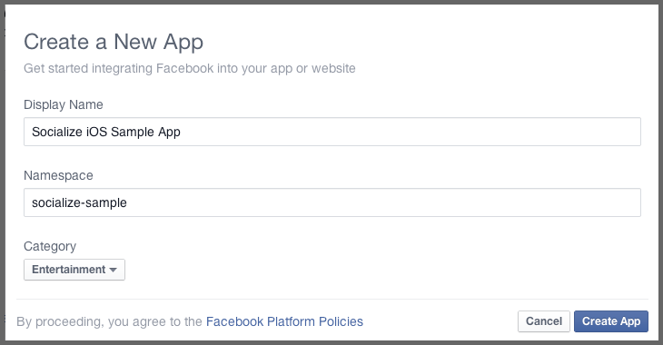
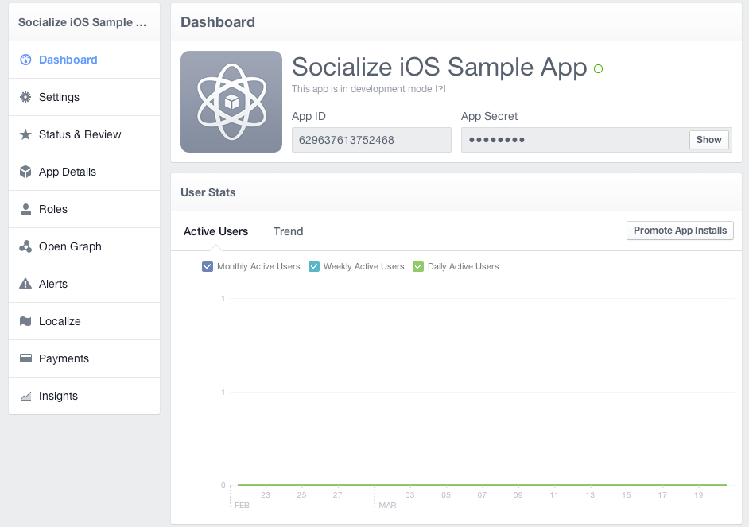
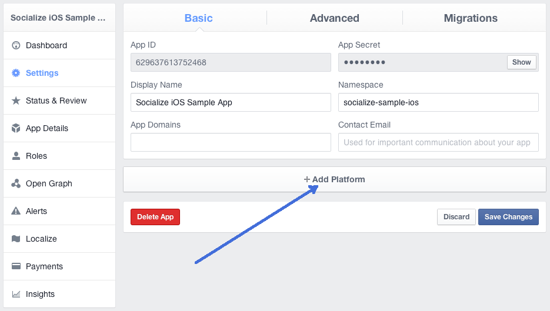
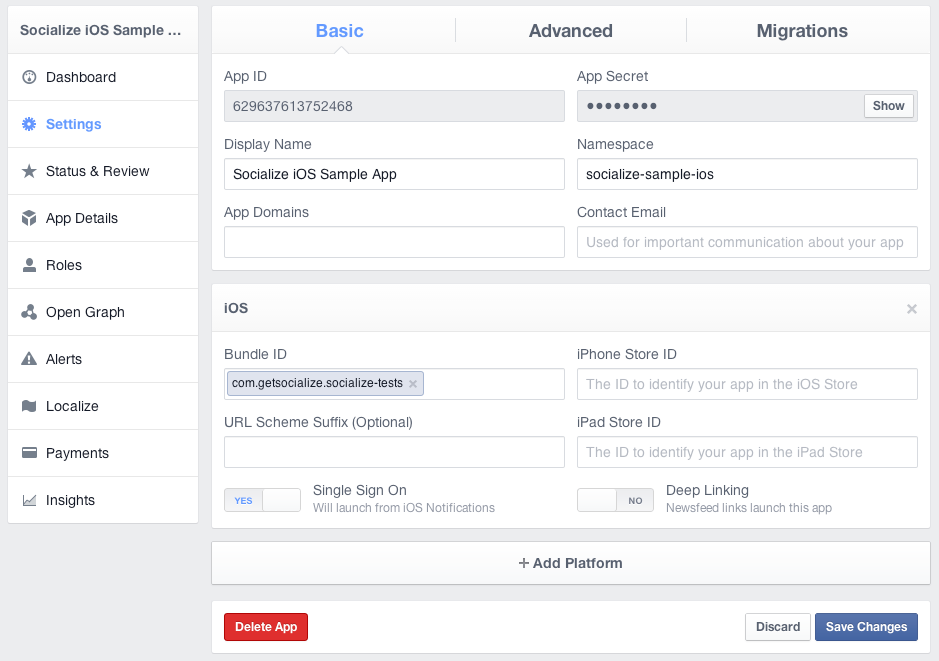

Facebook Integration¶
Introduction¶
It is strongly recommended that users be able to authenticate with Facebook when using Socialize so as to maximize the exposure and promotion of your app.
This provides significant benefits to both your application and your users including:
- Improved user experience through personalized comments
- Automatic profile creation (user name and profile picture)
- Ability to automatically post user comments and likes to Facebook
- Promotes your app on Facebook by associating your app with comments
To add Facebook authentication, you’ll need a Facebook App ID. If you already have a Facebook app, you can skip this section.
Setting up Facebook¶
Creating a Facebook Application¶
First create a Facebook app. Go to https://developers.facebook.com/apps and create a new app:
Your newly created Facebook app will have an ID, which is the ID used in Socialize and can be found on your Facebook Developer page:
For example, this is the Facebook App page for Socialize:
Add the iOS “platform”:

Enable SSO (single sign-on) and disable deep linking:
Note
Ensure iOS Native Deep Linking is DISABLED otherwise Facebook will bypass the Socialize SmartDownload process.
Configuring Facebook in Socialize¶
Let Socialize know your Facebook App ID, as shown above.
#pragma mark
- (BOOL)application:(UIApplication*)application didFinishLaunchingWithOptions:(NSDictionary*)launchOptions {
// set the socialize api key and secret, register your app here: http://www.getsocialize.com/apps/
[Socialize storeConsumerKey:@"SOCIALIZE_CONSUMER_KEY"];
[Socialize storeConsumerSecret:@"SOCIALIZE_CONSUMER_SECRET"];
[SZFacebookUtils setAppId:@"YOUR FB APP ID"];
//your application specific code
return YES;
}
If your app is not already configured for facebook authentication, then you’ll need to perform two more steps:
First, you must register your app to open with your facebook app id url by adding a URL Types array to your Application’s <MyApp>-Info.plist. The string is a lowercase fb followed by your app id. The example app is configured as below:

And lastly, you must be sure to call [Socialize handleOpenURL:url] from your UIApplicationDelegate’s application:openURL:sourceApplication: method. Socialize will take care of handing off the openURL request to the underlying Facebook iOS SDK. This completes the authentication flow.
#import <Socialize/Socialize.h>
- (BOOL)application:(UIApplication *)application openURL:(NSURL *)url sourceApplication:(NSString *)sourceApplication annotation:(id)annotation {
return [Socialize handleOpenURL:url];
}
Note
Standard Facebook configuration complete. Keep reading for special configuration
Linking with Existing Facebook Credentials¶
If your app already authenticates with Facebook, you can let Socialize know about the existing session. You can do this with the linkToFacebookWithAccessToken:expirationDate: call. For more information on using FBConnect on your own, you can check the official Facebook tutorial at Facebook iOS SDK.
- (void)linkToFacebook {
[SZFacebookUtils setAppId:@"fbMYFACEBOOKAPPID"];
// The following is only needed if you have multiple apps sharing the same facebook app id
[SZFacebookUtils setURLSchemeSuffix:@"myfreeversion"];
// Don't forget to add the fbMYFACEBOOKAPPIDmyfreeversion:// URL Scheme to your app, as above
// These should come from your own facebook auth process
NSString *existingToken = @"EXISTING_TOKEN";
NSDate *existingExpiration = [NSDate distantFuture];
[SZFacebookUtils linkWithAccessToken:existingToken expirationDate:existingExpiration success:^(id<SocializeFullUser> user) {
NSLog(@"Link successful");
} failure:^(NSError *error) {
NSLog(@"Link failed: %@", [error localizedDescription]);
}];
}
Note
The “publish_stream” permission is required for Socialize to function correctly. For maximum compatibility you should merge your apps required permissions with the ‘requiredPermissions’ class method of SZFacebookUtils
Posting to Facebook on your own¶
Should you need to post to Facebook on your own, you can do so by using the direct Facebook access methods on the utils classes
- (void)postToFacebookFeed {
NSMutableDictionary *postData = [NSMutableDictionary dictionaryWithObjectsAndKeys:
@"hi there", @"message",
nil];
[SZFacebookUtils postWithGraphPath:@"me/feed" params:postData success:^(id post) {
NSLog(@"Posted %@!", post);
} failure:^(NSError *error) {
NSLog(@"Facebook post failed: %@, %@", [error localizedDescription], [error userInfo]);
}];
}
See http://developers.facebook.com/docs/reference/api/post/ for more info
Posting Images to Facebook¶
You can also post an image.
- (void)postImageToFacebook {
UIImage *logo = [UIImage imageNamed:@"socialize_logo.png"];
NSData *logoData = UIImagePNGRepresentation(logo);
NSMutableDictionary *params = [NSMutableDictionary dictionary];
[params setObject:logoData forKey:@"source"];
[params setObject:@"Socialize" forKey:@"caption"];
[SZFacebookUtils postWithGraphPath:@"me/photos" params:params success:^(id info) {
NSLog(@"Created post: %@", info);
} failure:^(NSError *error) {
NSLog(@"Failed to post: %@", [error localizedDescription]);
}];
}
See http://developers.facebook.com/docs/reference/api/photo/ for more info